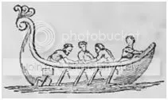
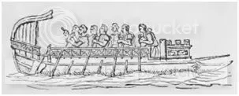

Пóходя коснувшись в прошлый раз транспортного судна, которое древние римляне наывали corbita, уже не смог остановиться. Захотелось узнать о нем побольше. Вот некоторые интересные детали, которые удалось раскопать.
Термин corbita употреблялся в источниках II-I вв. до н.э. Мы можем установить из них, что это было достаточно крупное судно, хотя прямых свидетельств о его размерах не сохранилось. Имеются лишь косвенные соображения. Прежде всего, мы можем определить, что это было грузовое судно. Цицерон, в письме к Аттику (Cic. Att. XVI, 6,1), рассуждая, каким транспортом ему добраться из Регия в Патры, колеблется: воспользоваться ли ему корбитой, или более маленьким судном – actuariola (cogitaremus corbitane Patras an actuariolis) . Корбиту он называет oneraria, т.е. грузовое судно. Но так как Цицерон мог рассматривать его, выбирая варианты своего путешествия, значит корбита могла перевозить не только грузы, но и пассажиров, т.е. это было, по нынешним меркам, грузо-пассажирское судно.
Actuariola, уменьшительное от actuaria, обозначало во времена Цицерона беспалубное гребное судно, число гребцов на котором не превышало 18 человек, т.е. по девять весел на борт. Цицерон путешествовал на актуариолах, имеющих 10 гребцов (…haec ego conscendens e Pompeiano tribus actuariolis decemscalmis. «…Пишу это, отплывая от помпейской усадьбы на трех легких десятивёсельных кораблях.» Cic. Att. XVI, 3,6 , пер. В.О.Горенштейна)

Корбита была очень тихоходным судном. Это ее качество даже вошло в поговорку: homo tardior, quam сorbita est in tranquillo mari - человек более медлительный, чем грузовое судно в спокойном море.
В комедии Тита Макция Плавта «Пуниец» главный герой Агорастокл говорит:
Íta me di ament, tardo amico nihil est quicquam inaequius,
praesertim homini amanti, qui quidquid agit properat omnia.
sicut ego hos duco advocatos, homines spissigradissimos,
tardiores quam corbitae sunt in tranquillo mari.
Ничего на свете хуже нет, чем друг медлительный,
А особенно влюбленным: ведь они во всем спешат.
Так свидетелей веду я, тяжких на ходу людей
Медленней, чем в тихом море корабли, идут они.
(Акт 3, сцена 1. Пер. А. Артюшкова)
и дальше, поторапливая свидетелей:
Obsecro hercle, operam celocem hanc mihi, ne corbitam date; attrepidate saltem, nam vos adproperare haud postulo.
Челноком мне будьте быстрым, а не грузовым судном!
Хоть засемените! Спешки с вас уж я не требую.

Тихоходность корбиты объясняют тем, что, по сравнению с celox , который был гребным кораблем (см. рисунок), это было парусное судно, имевшее всего несколько весел, которые выполняли вспомогательные функции. Поэтому-то и говорит Плавт, что эти корабли медленно идут «в тихом море», т.е. при безветрии. А для celox’а штиль был не препятствием, а благоприятным фактором.
Действительно, на том рисунке корбиты, который сделан с монеты эпохи Коммода (см. предыдущий пост), показано двухмачтовое парусное судно.
Наличие двух мачт говорит о значительном водоизмещении этого транспортного судна. Ноний Марцел (начало IV в.), латинский грамматик, который в своем обширном сочинении "De compendiosa doctrina per litteras" дает пояснения выражений, взятых их римский писателей прежних поколений, говоря о корбите, ссылается на творца римской сатиры Гая Луцилия (II в. до н.э.). Мне удалось найти упоминаемое Нонием место в Девятнадцатой Сатуре Луцилия. Рассуждая о монстрах, которые описывает Гомер в своей «Одиссее», Луцилий сравнивает дубину циклопа
(см. русский перевод этого места из Гомера:
Подле закуты лежала большая дубина циклопа –
320 Свежий оливковый ствол: ее он срубил и оставил
Сохнуть, чтоб с нею ходить. Она показалась нам схожей
С мачтою на корабле чернобоком двадцативесельном,
Груз развозящем торговый по бездне великого моря.
Вот какой толщины и длины была та дубина.
Гомер, «Одиссея», 319, 322-324 (Пер. В.В.Вересаева) )
с мачтой корбиты, подтверждая тем самым большие по тогдашним масштабам размеры этого судна.
Именно большие размеры корбиты, ненасытность ее чрева, дали основание Титу Макцию Плавту для каламбура , к которому он прибегает в комедии «Касина», характеризуя словами рабыни прожорливость окружающих старого Лисидама женщин:
Едуний этих знаю, барку с хлебом всю
Способны съесть.
(Пер. А. Артюшкова)
(novi ego illas ambestrices: corbitam cibi
comesse possunt… Pl. Casina, IV,I,20-21)
Суть каламбура в том, что вместо слова «корзина» (corbis) Плавт употребляет слово «корбита» (corbita). При переводе смысл этого каламбура, к сожалению, теряется.
И в заключение еще один вариант объяснения, почему corbita несла на мачте корзину. Henry Thomas Riley, издавший и откоментировавший комедии Плавта (London. G. Bell and Sons. 1912), считает, что вывешивая на топе мачты корзину, владелец судна стремился показать на значительной дистанции, что оно не являются военным кораблем и тем самым избежать нападения военного флота противника. Видимо, тогда еще не существовало принципа «Топи их всех!» и не считалось доблестью потопить транспортное судно противника. Но эта гипотеза, как и другие, требует проверки, чтобы подтвердить ее правдоподобность.